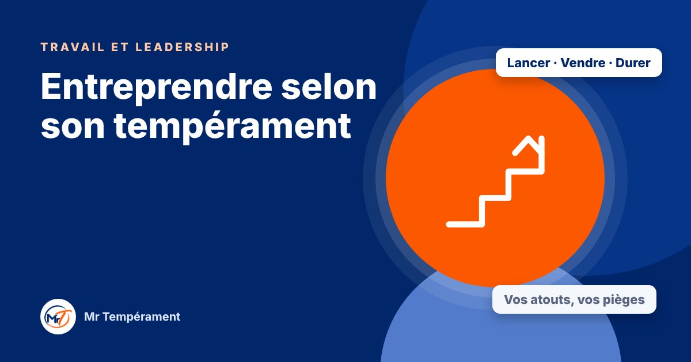

Entreprendre selon son tempérament

Lancer, vendre, décider, tenir : chaque tempérament a ses atouts d'entrepreneur et ses pièges.
Entreprendre demande de savoir lancer, vendre, décider, organiser et durer. Personne ne fait tout cela avec la même aisance. Votre tempérament détermine ce qui vous vient naturellement, et ce qui vous demandera plus d'effort ou un associé complémentaire.
L'entrepreneur Dominant : lancer et décider
Il ose, il avance vite, il tranche. Il a souvent du mal à attendre. Ses pièges : sous-estimer les risques, tout vouloir contrôler et négliger l'avis de son équipe. Valider une idée par un petit test avant d'investir, et s'entourer d'une personne prudente, l'aide à durer.
L'entrepreneur Influent : vendre et fédérer
Il convainc, attire les gens et construit un réseau. Ses pièges : la dispersion, les projets qui se multiplient et l'administratif négligé. Fermer un projet avant d'en ouvrir un autre, et s'associer avec quelqu'un de rigoureux, transforme son élan en entreprise solide.
L'entrepreneur Stable : fidéliser et durer
Il inspire confiance, fidélise ses clients et bâtit dans la durée. Ses pièges : fixer des prix trop bas, avoir du mal à refuser un client ou à se montrer. Augmenter ses tarifs progressivement, regarder ses chiffres chaque semaine et parler de son offre à quelques personnes de plus changent beaucoup de choses.
L'entrepreneur Consciencieux : structurer et soigner
Il analyse, prépare et livre un travail de qualité. Ses pièges : lancer trop tard, hésiter à vendre et à se faire connaître. Lancer une version simple avant d'être prêt, et fixer une date de lancement, évite que le projet reste dans les tiroirs.
Les associations qui fonctionnent
Les entreprises solides réunissent souvent des tempéraments complémentaires : un moteur qui lance, quelqu'un qui relie les gens, quelqu'un qui tient la durée, quelqu'un qui contrôle la qualité. Si vous êtes seul, vous pouvez compenser par des habitudes ou un mentor qui vous apporte ce qui vous manque naturellement.
Le tempérament ne décide pas de votre réussite. Il vous indique simplement où vous serez à l'aise, et où vous aurez intérêt à vous faire aider.
Un premier pas
Identifiez le geste d'entrepreneur qui vous coûte le plus : vendre, suivre les chiffres, décider ou déléguer. Faites-en un petit rendez-vous régulier dans votre semaine. L'entrepreneuriat est un entraînement, pas un talent figé.
Pour aller plus loin
Le Bilan DISC 3 domaines, avec le trio Impact, explore votre tempérament au travail, en leadership et en entrepreneuriat, avec une synthèse du trio.
Découvrir le trio Impact